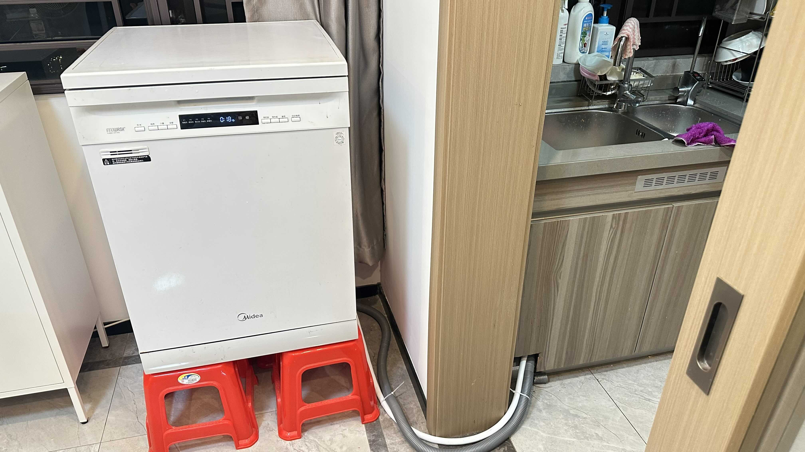

Réparation de Lave-vaisselle | Original, traduit par l'IA
Récemment, j’ai déménagé mon lave-vaisselle de chez mes parents à mon domicile dans la même ville. Le lave-vaisselle est un Midea 13 Q7. Je l’ai acheté durant l’été 2019 alors que je travaillais à Pékin. Au début de l’année 2020, j’ai utilisé le service de livraison Deppon pour le faire transporter à Guangzhou.
J’ai trouvé un technicien via le service de réparation d’appareils ménagers d’AMap. Je lui ai payé 750 CNY pour qu’il m’aide à le réparer et à l’installer chez moi. L’histoire est un peu longue. Nous avons travaillé de 15h à 20h pour enfin le faire fonctionner. À un moment donné, il est sorti pour acheter quelques matériaux.
Il y a eu deux ou trois fois où nous avons cru que c’était bon. Nous lancions un programme de lavage, mais après un certain temps, le sol était inondé d’eau. La première fois, nous avons découvert que le tuyau d’évacuation du lave-vaisselle avait un trou, ce qui a été vite observé et réparé. Cependant, il y avait toujours une fuite par le bas. Nous avons utilisé des supports pour surélever le lave-vaisselle afin de voir d’où venait la fuite. C’était comme inspecter une voiture.
Nous avons démonté le lave-vaisselle et vérifié, découvrant que certains tuyaux internes étaient percés. Le technicien a utilisé du ruban adhésif pour les colmater. Malheureusement, il y avait encore un autre trou, alors nous l’avons réparé à nouveau.
Finalement, vers 20h, tout était en ordre. Cette procédure m’a rappelé le développement logiciel. Avec le recul, ces problèmes sont naturels et logiques. Ils étaient simplement hors de nos attentes, mais suivaient les principes de la matière et du temps.

Source : Capturé par moi-même

Source : Capturé par moi-même